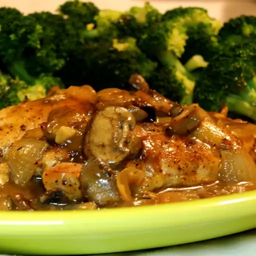

Sweet Chicken Marsala

Description
This is a delightful dish combining the unique flavors of Italian Marsala wine with the white meat of the chicken breast. The dish has been sweetened to appeal to a broader range of those who appreciate the fun of cooking with fine wines.
Ingredients
- 2 tablespoons butter
- 1 cup sliced fresh mushrooms
- 1 slice onion, minced
- 1 tablespoon chopped garlic
- 2 cups Marsala wine
- 1 ½ cups chicken stock
- 5 tablespoons brown sugar
- 1 tablespoon lemon juice
- 1 tablespoon molasses
- 1 tablespoon corn syrup
- 3 tablespoons cornstarch
- 1 tablespoon cold water
- 2 tablespoons olive oil
- 1 tablespoon butter
- 4 skinless, boneless chicken breast halves - pounded flat
- 2 tablespoons chopped green onion, or to taste
Steps
- Melt 2 tablespoons butter in a large pot over medium heat. Stir mushrooms, onion, and garlic into the melted butter, increase heat to medium-high, and cook and stir the mixture until the mushrooms are golden brown, 3 to 5 minutes.
- Stir Marsala wine, chicken stock, brown sugar, lemon juice, molasses, and corn syrup into the mushroom mixture; bring to a boil and cook, stirring frequently, until the liquid reduces by about half, 10 to 15 minutes.
- Whisk cornstarch into cold water in a small bowl. Stream the cornstarch slurry into the Marsala sauce, stirring continually; cook and stir until the sauce thickens, another 10 to 15 minutes.
- Heat olive oil with 1 tablespoon butter in a large skillet over medium heat; cook chicken until golden brown until no longer pink in the center and the juices run clear, 3 to 5 minutes per side. An instant-read thermometer inserted into the center should read at least 165 degrees F (74 degrees C).
- Arrange each chicken breast into the center of a plate. Drizzle Marsala sauce over each chicken breast; garnish with green onion to serve.